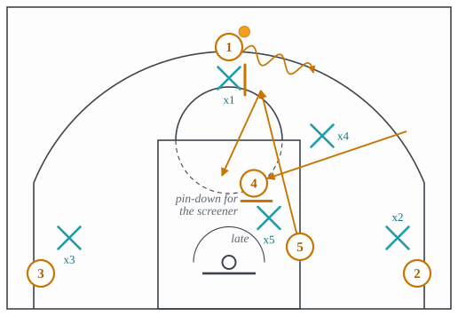
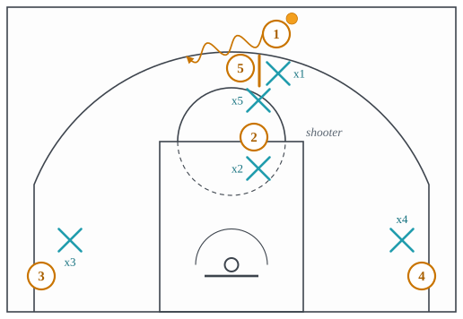
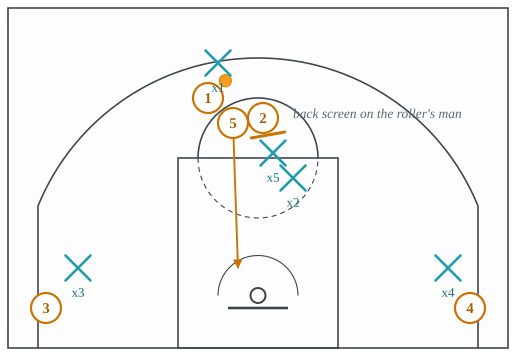
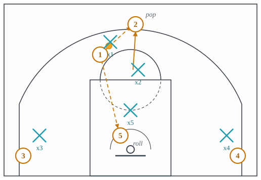
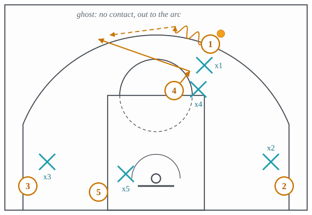
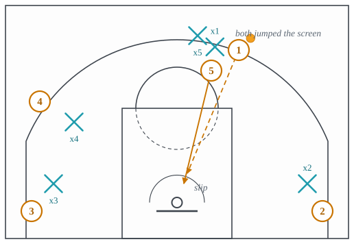
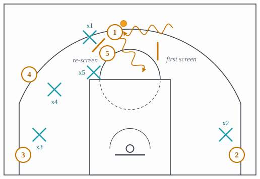

3.4: On-Ball Screens II: Named Ball-Screen Actions
Chapter 3: Offense
Lecture 3.3 ended with the pick-and-roll as one action with one variable changed at a time. The actions in this lecture change the pick-and-roll itself. Each was built to beat a specific coverage from lecture 4.3 that had become good at guarding the plain version: the big who arrives at the level of the screen, the defender who drops to meet the roller, the two defenders who both jump to the screen the moment they see it coming. Each answer is a screen that arrives differently, a roller who is screened for, or a screen that is never set at all.
Section 1 is the ram, which screens the screener before the screen. Section 2 is the Spain pick-and-roll, which screens the roller’s defender after it. Section 3 is the pair that punish a defense for anticipating: the ghost screen and the slip. Section 4 is the twist, a second screen from the other side. Section 5 names the actions heard on broadcasts for which this site has a description but not yet an entry, so a reader knows what was said even where the database does not yet have a card.
1 Ram: screen the screener first
The coverage that arrives at the level of the screen depends on the big’s defender getting there. The ram stops him. Just before the big sets his ball screen, a wing sets a pin-down on the big’s defender, so the big sprints into the ball screen and his defender arrives a step late, as in Figure 1. The handler now comes off a screen that nobody is guarding at the level, and the drop coverage the defense wanted to play is a drop by a defender who is still running.

- Setup
- The handler at the top with the ball. The big on the block. A wing between the big and the top, ready to screen the big’s defender. The other two in the corners.
- Trigger
- The wing’s pin-down lands on the big’s defender as the big starts to sprint up.
- Read
- The big sets the ball screen while his defender is still behind the pin-down. The handler comes off it. If the big’s defender is late, the handler is at the free-throw line with nobody in front of him and the roller behind. If the big’s defender skips the pin-down and sprints to the ball, the pin-down screener is open where the big’s defender left him. If the defense switches the pin-down, the wing’s defender is now guarding the big’s ball screen, and a guard is guarding the big.
- Payoff
- A pick-and-roll in which the screener’s defender is a step late, which turns any coverage into a late one.
- Beaten by
- Switching the pin-down so the ball screen is guarded by whoever is nearest, which is the switching of lecture 4.5; or the big’s defender going under the pin-down and beating the big to the spot.
2 Spain: screen the roller’s defender
The drop coverage meets the roller with the big’s own defender dropping back. The Spain pick-and-roll takes that defender out. A third attacker, a shooter, starts under the ball screen at the free-throw line. As the big rolls, the shooter back-screens the dropping defender, so the roller is free to the rim; then the shooter pops out to the arc behind the play, so if the dropping defender’s teammate helps on the roller, the shooter is open at the top. It is also called the stack pick-and-roll, from the two players stacked at the top. Figure 2, Figure 3 and Figure 4 show the three beats.



- Setup
- A high pick-and-roll at the top, with a shooter at the free-throw line below the screen and the other two attackers in the corners.
- Trigger
- The big rolls and his defender drops to meet him.
- Read
- The shooter back-screens the dropping defender and pops. The handler reads two things. If the back screen lands, the roller is open at the rim: throw the lob. If the dropping defender fights over the back screen to stay with the roller, or a corner defender comes to the rim, the shooter is open at the arc. If the shooter’s own defender stays with the shooter and never helps, the action is a plain pick-and-roll against a drop with one fewer help defender.
- Payoff
- A roller whose defender has been screened, and a shooter at the arc guarded by a defender who just got screened for.
- Beaten by
- Switching the back screen, so the shooter’s defender takes the roller and the dropping big takes the shooter; or the ball defender going under the first screen so the handler never turns the corner and the back screen has nobody to screen. Lecture 4.3 and lecture 4.5.
3 Ghost and slip: punishing the defense for arriving early
Both of these actions start with a screener who never screens. They exist because good coverages start before the screen is set: the handler’s defender steps up to fight over it, the big’s defender steps up to meet the ball. Two defenders who have moved toward a screen that has not yet happened are two defenders who can be left behind.
The ghost screen leaves them behind toward the arc. The screener runs at the handler’s defender as if to screen, makes no contact, and keeps going, out to the three-point line on the other side of the ball, as in Figure 5. The handler’s defender has gone over a screen that never came and is behind the ball. The screener’s defender has dropped to help on a roll that never comes. The ghost is open at the arc for a pass and a three, or the handler drives into the space both defenders vacated.

- Setup
- The handler above the arc with the ball. A screener who can shoot arriving as if to set a ball screen. The other three spaced away.
- Trigger
- The handler’s defender adjusts his feet to fight over the coming screen, or the big’s defender steps up to hedge it.
- Read
- The screener veers past without contact and runs to the arc. The handler drives into the gap the two defenders left. If the big’s defender recovers to the ghost, the drive is open. If he stays home, the pass out to the ghost is an open three. If the handler’s defender switches onto the ghost, the handler has a big guarding him on the drive.
- Payoff
- Two defenders committed to a screen that did not happen, and a shooter or a driver in the space they left.
- Beaten by
- Defenders who guard the screen only once it is set, which costs them against a real screen, or a switch called early enough that the ghost is picked up as he arrives. Lecture 4.3.
The slip leaves them behind toward the rim. It is the same fake, aimed the other way: the screener approaches, both defenders jump up to the screen, and the screener cuts straight to the rim behind both of them, as in Figure 6. The pass is over the top, and the finish is a layup or a lob. A team that slips well makes the defense hesitate on every screen, which is what the plain pick-and-roll of lecture 3.3 needs to work.

- Setup
- A screener approaching the handler’s defender, with the paint empty.
- Trigger
- The screener sees both defenders step up to the screen before it is set: the handler’s defender to fight over it, his own defender to hedge or trap.
- Read
- The screener cuts to the rim. The handler passes over the top if the lane is empty; if the low man has rotated to the rim, the corner the low man left is open for a skip pass.
- Payoff
- A layup or a lob against two defenders who are above the play.
- Beaten by
- The big’s defender staying between the screener and the rim until the screen is actually set, which is the discipline behind the drop; or a low man who tags the slip early. Lecture 4.3 and lecture 4.4.
4 Twist: the second screen from the other side
The twist gives the defense the same problem twice, in opposite directions. The handler comes off a ball screen going one way; his defender fights over and the big’s defender drops or hedges toward that side. The screener immediately turns and sets a second screen on the other side of the handler, and the handler crosses back the other way off it, as in Figure 7. Both defenders have committed to the first direction and now have to recover against the second. It is also called a re-screen, and a flip when the screener changes the angle of the same screen without resetting.

- Setup
- A high pick-and-roll with the floor spaced, and a screener quick enough to reset.
- Trigger
- The handler comes off the first screen and both defenders lean toward that side.
- Read
- The screener turns and sets the second screen on the handler’s other shoulder. The handler crosses back off it. If the ball defender is now trailing, the handler is downhill against the big alone. If the big’s defender has stepped up to stop the crossover, the screener rolls behind him. If the defense had iced the first screen toward the sideline, the second screen sends the handler back toward the middle, which is where ice did not want him.
- Payoff
- A second pick-and-roll against two defenders who have already spent their first step on the first one.
- Beaten by
- The ball defender going under the second screen and conceding the pull-up, or a big who plays both screens at the level and never leans. Lecture 4.3.
5 Names heard for which there is no entry yet
The glossaries this site draws on name several more ball-screen actions. Each of the following except the flat screen is described by one publisher only, so under this site’s rule it has no entry and no card until a second independent source names it; the description is given here so the word is not a mystery when it is heard. The rule and the diff behind it are in the plan (plan/PLAN.md, section 8.4) and the dated report in data/sources/.
- Flat screen. A ball screen set at the top with the screener’s back square to the baseline, so the handler can go either way off it. It is the plain pick-and-roll with no angle; the defense cannot ice it because there is no side to send the handler to. A second publisher has named the flat screen since 2026-09-22, so it is on this list only until its entry is written.
- Euro ball screen. A ball screen on the wing with the same side of the floor emptied, so the roller and the handler have the whole side to themselves and the only help has to come from across the lane.
- Throw back. The handler comes off a ball screen and throws the ball back to a guard who has filled the spot the screener left; that guard then has the roller sealing inside for a post entry.
- Rocket. A counter to the hard hedge: the weak-side slot player holds his spot, and the handler passes to him the moment he clears the hedge, because the hedging big cannot get back to the roller before that pass finds him.
- Slide. A call for a slip in a high ball screen, usually with a guard screening for a guard rather than a big for a guard. What happens on the floor is the slip of Section 3: the screener arrives, makes no contact, and cuts to the rim behind two defenders who have already stepped up to the screen. The name carries the setting, not a different action.
- Hoosier, Lobo and Zaga. Each of these is a call, not a concept: a word a team says to start one particular sequence, of the kind taken from a college program’s nickname, so the word itself tells a listener nothing and the description has to do all of the work. Hoosier is a ball screen whose screener, instead of rolling, turns straight into a pin-down for a teammate. Lobo is a back screen set in the slot that runs directly into a ball screen in that same slot, which joins an off-ball screen to a ball screen the way the wedge of lecture 3.6 does. Zaga combines a zipper cut with a pick-and-roll, and the one glossary that names it attributes it to Gonzaga.
The idea to carry into lecture 3.5 is that a screen for the ball is only one of the two kinds. The other kind is set for a player without the ball, and the next two lectures are about those: first the shapes a screen can take, then the named actions built from them.